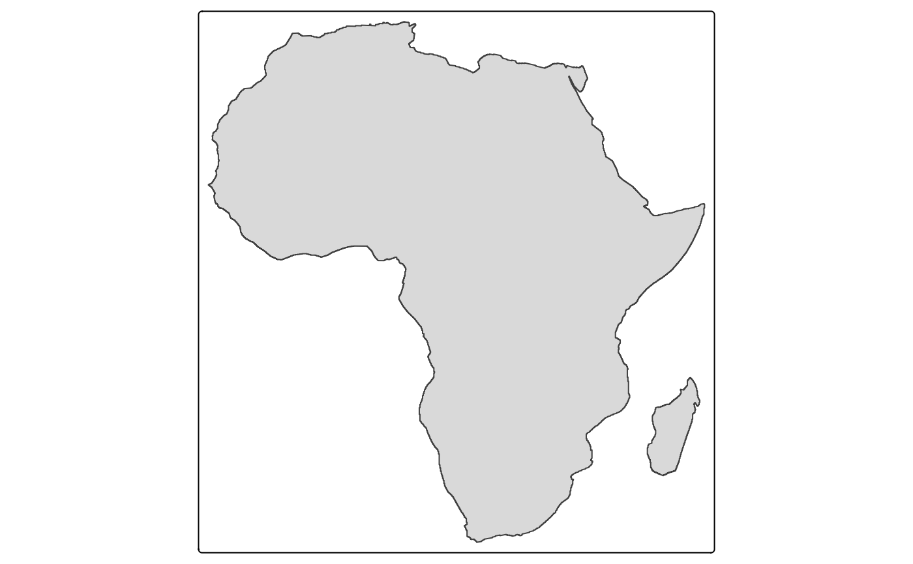

Map layer that draws polygons. Supported visual variables are: fill (the fill color),
col (the border color), lwd (line width), lty (line type),
fill_alpha (fill color alpha transparency) and col_alpha (border color alpha transparency).
Usage
tm_polygons(
fill = tm_const(),
fill.scale = tm_scale(),
fill.legend = tm_legend(),
fill.chart = tm_chart_none(),
fill.free = NA,
col = tm_const(),
col.scale = tm_scale(),
col.legend = tm_legend(),
col.chart = tm_chart_none(),
col.free = NA,
lwd = tm_const(),
lwd.scale = tm_scale(),
lwd.legend = tm_legend(),
lwd.chart = tm_chart_none(),
lwd.free = NA,
lty = tm_const(),
lty.scale = tm_scale(),
lty.legend = tm_legend(),
lty.chart = tm_chart_none(),
lty.free = NA,
fill_alpha = tm_const(),
fill_alpha.scale = tm_scale(),
fill_alpha.legend = tm_legend(),
fill_alpha.chart = tm_chart_none(),
fill_alpha.free = NA,
col_alpha = tm_const(),
col_alpha.scale = tm_scale(),
col_alpha.legend = tm_legend(),
col_alpha.chart = tm_chart_none(),
col_alpha.free = NA,
linejoin = "round",
lineend = "round",
plot.order = tm_plot_order("lwd", reverse = TRUE, na.order = "bottom"),
zindex = NA,
group = NA,
group.control = "check",
popup.vars = NA,
popup.format = list(),
hover = NA,
id = "",
options = opt_tm_polygons(),
...
)
tm_fill(...)
tm_borders(col = tm_const(), ...)
opt_tm_polygons(polygons.only = "ifany")Arguments
- fill, fill.scale, fill.legend, fill.chart, fill.free
Visual variable that determines the fill color. See details.
- col, col.scale, col.legend, col.chart, col.free
Visual variable that determines the color. See details.
- lwd, lwd.scale, lwd.legend, lwd.chart, lwd.free
Visual variable that determines the line width. See details.
- lty, lty.scale, lty.legend, lty.chart, lty.free
Visual variable that determines the line type. See details.
- fill_alpha, fill_alpha.scale, fill_alpha.chart, fill_alpha.legend, fill_alpha.free
Visual variable that determines the fill color transparency. See details.
- col_alpha, col_alpha.scale, col_alpha.legend, col_alpha.chart, col_alpha.free
Visual variable that determines the color transparency. See details.
- linejoin, lineend
Line join and line end. See gpar() for details.
- plot.order
Specification in which order the spatial features are drawn. See
tm_plot_order()for details.- zindex
Map layers are drawn on top of each other. The
zindexnumbers (one for each map layer) determines the stacking order. By default the map layers are drawn in the order they are called.- group
Name of the group to which this layer belongs. This is only relevant in view mode, where layer groups can be switched (see
group.control)- group.control
In view mode, the group control determines how layer groups can be switched on and off. Options:
"radio"for radio buttons (meaning only one group can be shown),"check"for check boxes (so multiple groups can be shown), and"none"for no control (the group cannot be (de)selected).- popup.vars
names of data variables that are shown in the popups in
"view"mode. Set popup.vars toTRUEto show all variables in the shape object. Set popup.vars toFALSEto disable popups. Setpopup.varsto a character vector of variable names to those those variables in the popups. The default (NA) depends on whether visual variables (e.g.fill) are used. If so, only those are shown. If not all variables in the shape object are shown.- popup.format
list of formatting options for the popup values. See the argument
legend.formatfor options. Only applicable for numeric data variables. If one list of formatting options is provided, it is applied to all numeric variables ofpopup.vars. Also, a (named) list of lists can be provided. In that case, each list of formatting options is applied to the named variable.- hover
name of the data variable that specifies the hover labels (view mode only). Set to
FALSEto disable hover labels. By defaultFALSE, unlessidis specified. In that case, it is set toid,- id
name of the data variable that specifies the indices of the spatial features. Only used for
"view"mode.- options
options passed on to the corresponding
opt_<layer_function>function- ...
to catch deprecated arguments from version < 4.0
- polygons.only
should only polygon geometries of the shape object (defined in
tm_shape()) be plotted? By default"ifany", which meansTRUEin case a geometry collection is specified.
Details
The visual variable arguments (e.g. col) can be specified with either a data
variable name (e.g., a spatial vector attribute or a raster layer of the object
specified in tm_shape()), or with a visual value (for col, a color is expected).
See vignette about visual variables.
Multiple values can be specified: in that case facets are created.
These facets can be combined with other faceting data variables, specified with tm_facets().
See vignette about facets.
The
*.scalearguments determine the used scale to map the data values to visual variable values. These can be specified with one of the availabletm_scale_*()functions. The default is specified by the tmap option (tm_options())scales.var. See vignette about scales.The
*.legendarguments determine the used legend, specified withtm_legend(). The default legend and its settings are determined by the tmap options (tm_options())legend.. See vignette about legends.The
*.chartarguments specify additional charts, specified withtm_chart_, e.g.tm_chart_histogram(). See vignette about charts.The
*.freearguments determine whether scales are applied freely across facets, or shared. A logical value is required. They can also be specified with a vector of three logical values; these determine whether scales are applied freely per facet dimension. This is only useful when facets are applied (seetm_facets()). There are maximally three facet dimensions: rows, columns, and pages. This only applies for a facet grid (tm_facets_grid()). For instance,col.free = c(TRUE, FALSE, FALSE)means that for the visual variablecol, each row of facets will have its own scale, and therefore its own legend. For facet wraps and stacks (tm_facets_wrap()andtm_facets_stack()) there is only one facet dimension, so the*.freeargument requires only one logical value.
Examples
# load Africa country data
data(World)
Africa = World[World$continent == "Africa", ]
Africa_border = sf::st_make_valid(sf::st_union(sf::st_buffer(Africa, 0.001))) # slow and ugly
# without specifications
tm_shape(Africa_border) + tm_polygons()

tm_shape(Africa_border) + tm_fill()
 tm_shape(Africa_border) + tm_borders()
tm_shape(Africa_border) + tm_borders()
 # specification with visual variable values
tm_shape(Africa) +
tm_polygons(fill = "limegreen", col = "purple", lwd = 2, lty = "solid", col_alpha = 0.3) +
tm_text("name", options = opt_tm_text(remove_overlap = TRUE)) +
tm_shape(Africa_border) +
tm_borders("darkred", lwd = 3)
# specification with visual variable values
tm_shape(Africa) +
tm_polygons(fill = "limegreen", col = "purple", lwd = 2, lty = "solid", col_alpha = 0.3) +
tm_text("name", options = opt_tm_text(remove_overlap = TRUE)) +
tm_shape(Africa_border) +
tm_borders("darkred", lwd = 3)
 # specification with a data variable
tm_shape(Africa) +
tm_polygons(fill = "income_grp", fill.scale = tm_scale_categorical(values = "-tol.muted"))
# continuous color scale with landscape legend
tm_shape(Africa) +
tm_polygons(fill = "inequality",
fill.scale = tm_scale_continuous(values = "-scico.roma"),
fill.legend = tm_legend(
title = "", orientation = "landscape",
position = tm_pos_out("center", "bottom"), frame = FALSE
)) +
tm_shape(Africa_border) +
tm_borders(lwd = 2) +
tm_title("Inequality index", position = tm_pos_in("right", "TOP"), frame = FALSE) +
tm_layout(frame = FALSE)
# specification with a data variable
tm_shape(Africa) +
tm_polygons(fill = "income_grp", fill.scale = tm_scale_categorical(values = "-tol.muted"))
# continuous color scale with landscape legend
tm_shape(Africa) +
tm_polygons(fill = "inequality",
fill.scale = tm_scale_continuous(values = "-scico.roma"),
fill.legend = tm_legend(
title = "", orientation = "landscape",
position = tm_pos_out("center", "bottom"), frame = FALSE
)) +
tm_shape(Africa_border) +
tm_borders(lwd = 2) +
tm_title("Inequality index", position = tm_pos_in("right", "TOP"), frame = FALSE) +
tm_layout(frame = FALSE)
 # bivariate scale
tm_shape(World) +
tm_polygons(tm_vars(c("inequality", "well_being"), multivariate = TRUE))
#> Labels abbreviated by the first letters, e.g.: "2 to 3" => "2"
# bivariate scale
tm_shape(World) +
tm_polygons(tm_vars(c("inequality", "well_being"), multivariate = TRUE))
#> Labels abbreviated by the first letters, e.g.: "2 to 3" => "2"